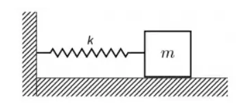
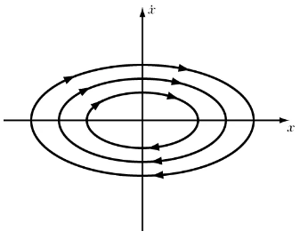

Herhangi bir konuda araştırma yapmaya başlanırken atılması gereken belki de ilk adım, konu hakkında sorular sormaktır. Bu sorular elbette ilk etapta çok karmaşık olmak zorunda da değil. Mesela, tipik 5N1K sorularından başlamak, bizi konu hakkında daha derin düşünmeye sevk edebilir. Konu hakkında bildiklerimiz arttıkça da, daha sofistike sorular aklımıza gelir ve bu bizi bir zincirleme reaksiyon gibi başka araştırma konularına yöneltir. Enerji 101 serimizde bu metodolojiyi uygulayacağız. O halde ilk sorumuz gelsin.
Enerji Nedir?
Sorunun bu kadar kısa olması bizi yanıltmasın. Her ne kadar internet üzerinde yapılan ilk araştırmalarda enerji, nesneler üzerinde iş yapılabilme kapasitesidir veya iş yapabilme yeteneğidir gibi klişe cümlelerle tanımlanmaya cüret edilse de, aslında bu önemli soruyu tam olarak cevaplamak için yeterli değiller. Çünkü, bu cümlelerde dikkati çeken kavram olan iş’in ne demek olduğu bile her koşul için ifade edilemeyebilir. Örneğin, mekanik bir sistem üzerine düşünüldüğünde, iş dinamik bir parametre olarak ifade edilebilirken, konu elektromanyetik alanlar olduğunda nasıl ifade edilebilir ki ? Veya daha da ileri gidersek Quantum mekaniğinde iş tanımı nasıl yapılabilir ? Bu yüzden, klişelerden vazgeçip, enerjinin neyi ifade edebileceğini bir daha düşünmekte fayda var. Ama bunu yaparken anlaşılabilirliği artırmak adına özelden genele bir çıkarımda bulunmak faydalı olacaktır.
Enerji, klasik Newton fiziği ele alındığında 2 farklı formda karşımıza çıkar: Kinetik enerji ve potansiyel enerji. Kinetik enerji, kütlesi olan bir parçacığın hızının bir fonksiyonunu ifade ederken, potansiyel enerji yine kütleli bir parçacığın pozisyonunun bir fonksiyonu şeklinde ifade edilir. Kinetik enerji ile potansiyel enerjinin toplamı da bize toplam enerjiyi verir. Örneğin, alttaki şekildeki gibi bir harmonik osilatör sistemini ele alalım ve bu sistemde, m kütleli bir cisim ve yay katsayısı k olarak verilen bir yay kullanılmış olsun.

Harmonik Osilatör sistemi
Bu sistem için toplam enerji, yayda depolanan potansiyel enerji ve m kütleli cismin yer değiştirmesinden (hızından) kaynaklanan kinetik enerjinin toplamı şeklinde alttaki gibi ifade edilebilir.
Sistemin sahip olduğu toplam enerjinin matematiksel gösterimi
Üstteki matematiksel ifadeden enerjinin, pozisyon ve hız değişkenlerine bağımlı olduğu çıkarımını yapabiliriz. Çünkü diğer 2 parametre, kütle ve yay katsayısı, sabit değerler. O halde pozisyon (x) ve hız (v) uzayında düşünecek olursak, (x,v) ikilisi bu sistemin enerjisinin uzaydaki durumunu tanımlar.
Ayrıca görüldüğü üzere, enerji matematiksel ifade gereği direkt olarak zamana bağlı bir mefhum değildir. Bu yüzden, enerjinin zamana bağlı değişimi (zamana göre türevi) 0 olur. Bu da bize enerjinin korunumunu gösterir. Yani, enerji miktarı sabittir ve yalnızca bir türden başka bir türe dönüşümü vardır diyebiliriz. O halde yukarıda verilen enerji fonksiyonunu herhangi sabit bir c ye eşitlersek, farklı c değerlerine göre farklı elips yörüngelerini alttaki gibi grafiksel olarak ifade edip, gösterebiliriz.

Peki, bu görsel bize tam olarak neyi ifade ediyor olabilir sizce ? Üzerine düşünelim. En içteki elipsi ele alalım. Bu elips bize farklı (x,v) ikilileri için aynı enerjinin takip edildiğini gösteriyor değil mi ? Yani, örneğin, cismin hızı azalırken, yayın yer değiştirmesi artıyor veya tam tersi. İşte böylece, sürtünmesiz ortamda, bu harmonik hareket sonsuza kadar devam edecek ve toplam enerji her zaman için c’ye eşit olarak kalacak. Hiç bir zaman enerji yani c değeri artmayacak veya azalmayacak.
Tüm bunları göz önüne aldığımızda, aslında enerji dediğimiz mefhum, herhangi bir sistem için bir kısıtı ifade ediyor. Yani fiziksel olarak yorumladığımızda, enerji, bir sistemin olası durumları üzerinde bir kısıtlama belirten bir sayı olduğunu söyleyebiliriz.
Bu soruya Erkcan Özcan hoca tarafından verilen bir cevaba da buradan ulaşabilirsiniz.
Şimdi gelin, yeni sorular sorarak devam edelim.
Enerji, sabit değeri ifade ediyorsa, evrende bu sayıyı oluşturan bileşenler neler ? Fiziksel olarak düşündüğümüzde, bu enerjinin en büyük bileşeni nedir ? Bu bileşenler sabit ama aynı zamanda sınırsız da olabilir mi ? Enerjinin kendisi, sistem üzerinde bir kısıtı ifade ediyorsa, bunu en verimli şekilde nasıl kullanabiliriz ?
Önümüzdeki haftalarda, bu ve benzeri sorulara yanıt arayacağız. Görüşmek üzere.